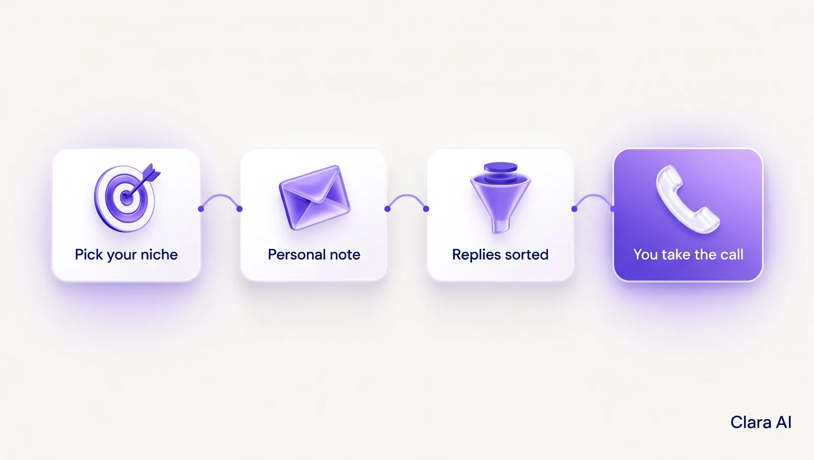

A LinkedIn outreach agent for consultants and agencies finds the decision makers you want as clients, sends short personal notes from your own profile, follows up and passes warm replies to you on WhatsApp. It gives a referral-led firm a steady second source of new client conversations, while you keep the sales calls.
Most consultancies and agencies grow through referrals and repeat work. That is a good place to start, but it makes the pipeline lumpy. When the team is busy delivering, nobody prospects. When a big project ends, there is a scramble for the next one. An agent does the one job that always slips: reaching new buyers every week.
The problem is rarely skill. Service firms are usually good at the work and good on a call. The gap sits before the call:
LinkedIn suits this kind of business because your buyers are already there, your profile shows your expertise, and a short, relevant note from a real person still gets read.
Think of it as a careful business development assistant who works in a browser and reports back. It handles the repeatable steps:

It works best when the offer is clear and the buyer is easy to describe. Good fits include:
It is a weaker fit if you sell to consumers, if your service changes with every client, or if you cannot yet say in one line who you help and why.
Service firms usually weigh four ways of getting new LinkedIn conversations. Here is how they compare on the things that matter to a small team:
| Option | Your time each week | Consistency | Personal tone | Who handles replies |
|---|---|---|---|---|
| Partners do it themselves | High | Drops when client work peaks | Strong | You |
| Junior business development hire | Medium (training and managing) | Good once trained | Depends on the person | The hire, then you |
| Self-serve automation tool | Medium (setup, copy, checking) | Good | Often generic | You sort them |
| Outreach agent run for you | Low (weekly review) | Every working day | Personal, from approved facts | Sorted, warm ones sent to you |
For a deeper look at tools versus done-for-you services, read LinkedIn automation vs LinkedIn agency. If you are weighing a hire, see LinkedIn outreach agent vs SDR hire.
This is the right worry for any advisor or agency. Your name is the product. Three habits protect it:
It also matters for account safety. LinkedIn's User Agreement restricts automated activity that breaks its rules, and its help page on prohibited software and extensions explains why. High-volume blasting is the real risk. Any automation carries some risk, so keep it personal and paced, and keep a person checking the work.
A good start takes a short call and a few clear answers. Bring these:
Our step-by-step guide on how to book B2B sales meetings on LinkedIn covers what to send and when to ask for the call.
We share only dated, real numbers. For Sanjeet Ray, a business coach, October 2026 brought 149 invites, 43 connections, 12 conversations and 3 warm leads. For a coach or consultant, a few warm leads a month can be worth far more than the effort, because one new client often lasts months.
Your results will depend on your offer, your niche and how clear the target list is. Judge it over a full month on four numbers: people reached, acceptances, replies from real buyers and booked calls.
Clara AI is a 14-person AI team that builds and runs agents for 19 businesses. We set up the AI LinkedIn Outreach Agent and run it for you, so you do not need a tech team or a new hire. A person on our team checks the work, and warm replies reach you on WhatsApp. Tell us who you help and who you want to reach, and we aim to show you a first demo within 7 days.
If clients also find firms like yours through Google or ChatGPT, our AI SEO Agent publishes a new post on your site every day. On our own blog, organic sessions rose 28% in 10–25 Oct 2026 compared with 24 Sep–9 Oct. Need something else automated? See our custom AI agents.